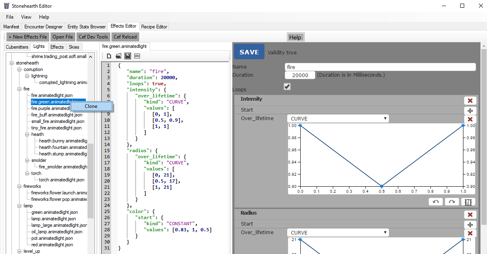

Lights in stonehearth are normally looping effects. We can use them together with cubemitter tracks, so that the light is more apparent.
- The effect file
- Creating animated lights files
- Testing light effects
- How to create light effects in SHED
The effect file
These are example tracks from the effect file:
"light": {
"type": "light",
"light": "/rayyas_children/data/horde/animatedlights/fire/hearth/hearth.lamp.animatedlight.json",
"transforms": { "x": 3, "y": 3, "z": 0 },
"shadows": true
},
"light2": {
"type": "light",
"light": "/rayyas_children/data/horde/animatedlights/fire/hearth/hearth.lamp.animatedlight.json",
"transforms": { "x": -3, "y": 3, "z": 0 },
"shadows": true
}
They have very few properties:
"type" : "light" -- the type of the track (a light effect).
"light" -- path to the JSON file that defines the settings for the lights. Like with the cubemitter files, by default they will be read from
stonehearth/data/horde.In the light tracks from existing effects, you'll see that the path starts by the
animatedlightsfolder. It will actually be read asstonehearth/data/horde/animatedlights/lamp/lamp.animatedlight.json, so our paths should start from the namespace of our mod, for example/candyland/data/horde/animatedlights/cupcake_lamp/cupcake_lamp.animatedlight.json. Otherwise the game will try to read them fromstonehearth/data/horde."transforms": {} -- contains "x", "y" and "z" fields to define an offset (in number of blocks) at which to position the origin of the light.
"shadows" -- optional field (false by default). A boolean for enabling/disabling casting shadows from this light source.
Shadows are computationally expensive, so if your light is going to be small, you can use false here. For bigger lights, like the firepit, it's nice to see them casting shadows from the objects around (actual number of shadows can still be tweaked from the graphic settings in the game).
"bone" -- optional field. It is the name of the entity's bone to which we want to attach this light.
Creating animated lights files
Example of an animatedlight JSON file:
{
"name": "fire",
"duration": 1800,
"loops": true,
"intensity": {
"over_lifetime": {
"kind": "CONSTANT",
"values": [0.8]
}
},
"radius": {
"start": {
"kind": "CONSTANT",
"values": [10]
}
},
"color": {
"start": {
"kind": "CONSTANT",
"values": [0.89, 0.227, 0.085]
}
}
}
We have the usual "name", "duration" (in milliseconds) and "loops" properties. Animated lights normally loop.
Then we have these 3 properties:
- "intensity" -- the intensity of the light. It can be values higher than 1.
- "radius" -- the radius of the light. Lights will fade out at the borders, so it may not feel exact.
- "color" -- the color of the light. It blends with the terrain color.
- "inner_radius" -- optional property. It will give more intensity to the center of the light, feels like two lights at the same place, one smaller than the other one depending on this value.
All of these properties can have "start" and/or "over_lifetime" fields. The "start" can be "CONSTANT" or "RANDOM_BETWEEN", and the "over_lifetime" can be "CONSTANT", "RANDOM_BETWEEN", "CURVE" or "RANDOM_BETWEEN_CURVES". See this table for examples on how to set up the "values" depending on the "kind".
Testing light effects
We can test light effects without having to restart the game each time by using the user_settings option mentioned here.
How to create light effects in SHED
At the time this guide was written, SHED won't be able to detect the effects if they're not inside the directories mentioned above.
So make sure you're using the same directory structure than in the stonehearth mod (your__mod_namespace/data/horde/animatedlights).
Go to the Effects Editor, select the 'Lights' tab and clone an existing light:

Then edit the values in the web (CEF) editor at the right or in the JSON editor in the middle. Some tips about the curve editors can be found here.